Two hundred years, in pictures
From a rabbi born in Galicia in 1823 to a boy born in Brussels in 1946 — and everything we were able to prove.
Part oneWhy we made this
For years Dov has said the same thing. What he wanted more than anything was to travel with his mother. To stand with her in the places she came from. To hear her tell the story where it happened, and to learn who his family were.
He cannot. So his family went and did it for him.
Everything here was found slowly, over about a year — in Polish archives, in Yad Vashem, in old birth registers, in passport files, in newspapers eighty years old, and in ninety pages his mother dictated in 1986 when a teacher sat down and asked her.
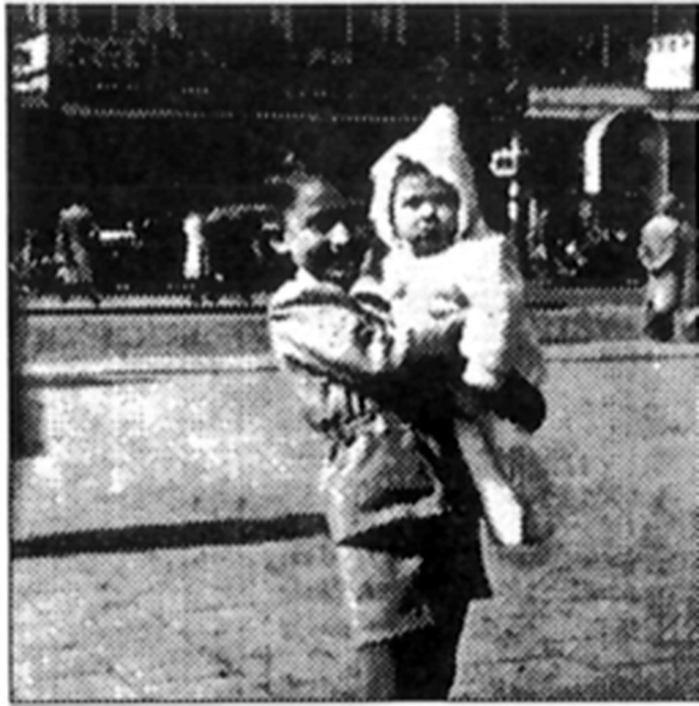
Part twoThe line, father to son
Five men, one after another. Each one is the father of the next.
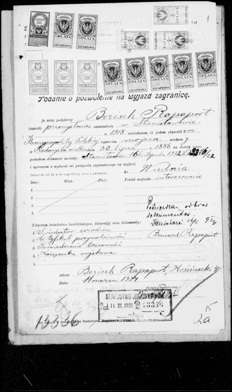
Part threeThe people
These are the faces the archive can actually show. Every one was checked by eye before it was published.
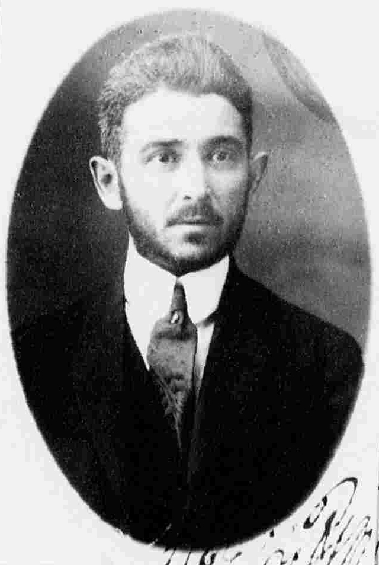
Berish Rapaport
Dov’s grandfather. This photograph comes from a certificate he was given in 1924.
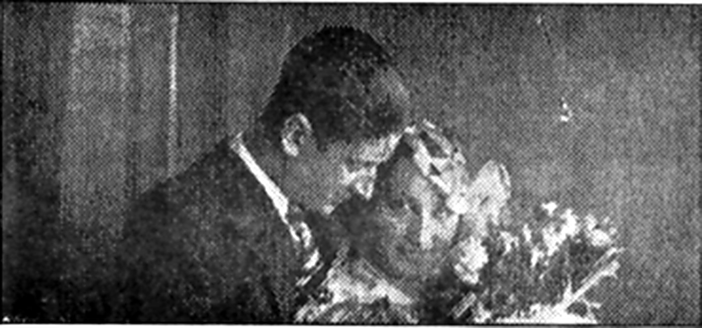
David and Lusia
Dov’s parents on their wedding day. He was 23, she was 21.
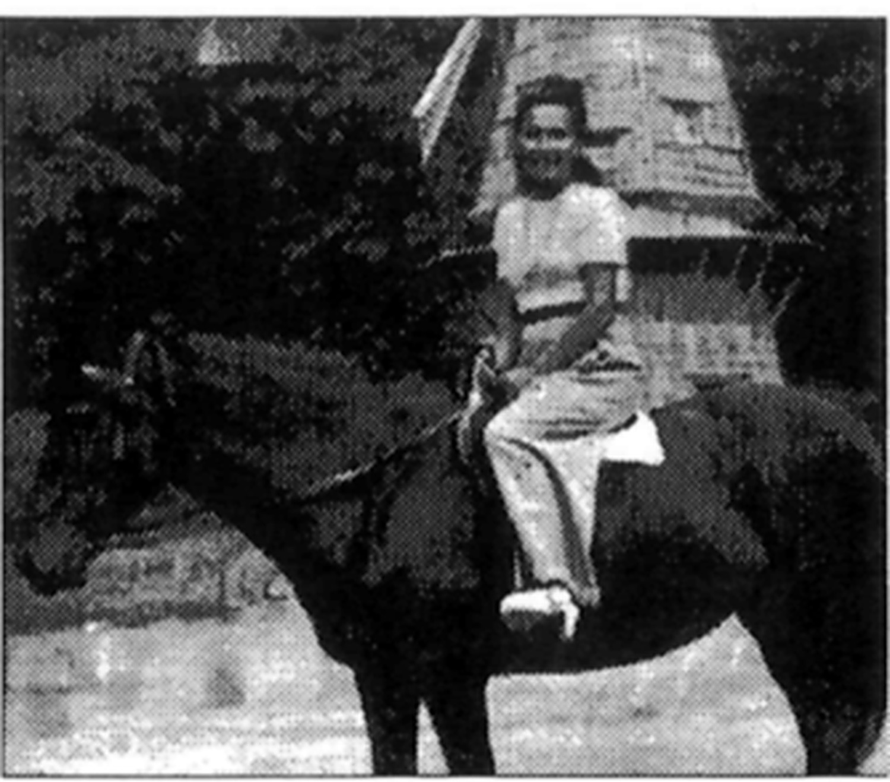
Lusia as a girl
Her nickname was Lajka. Her father called her wild, "like a demon".
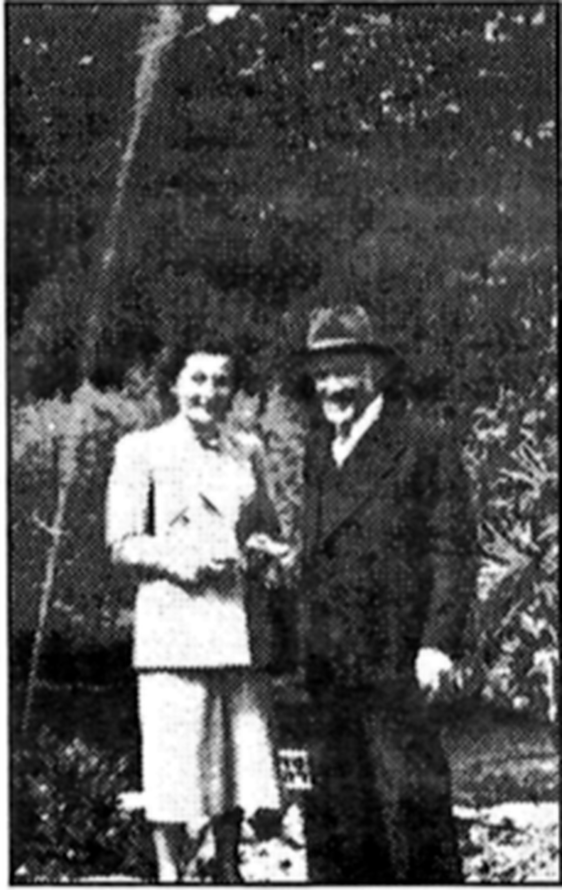
Lusia and her father
Elias Weitzner, Dov’s other grandfather. One of very few pictures of that side.
Matel Weinreb
Dov’s grandmother on his mother’s side.
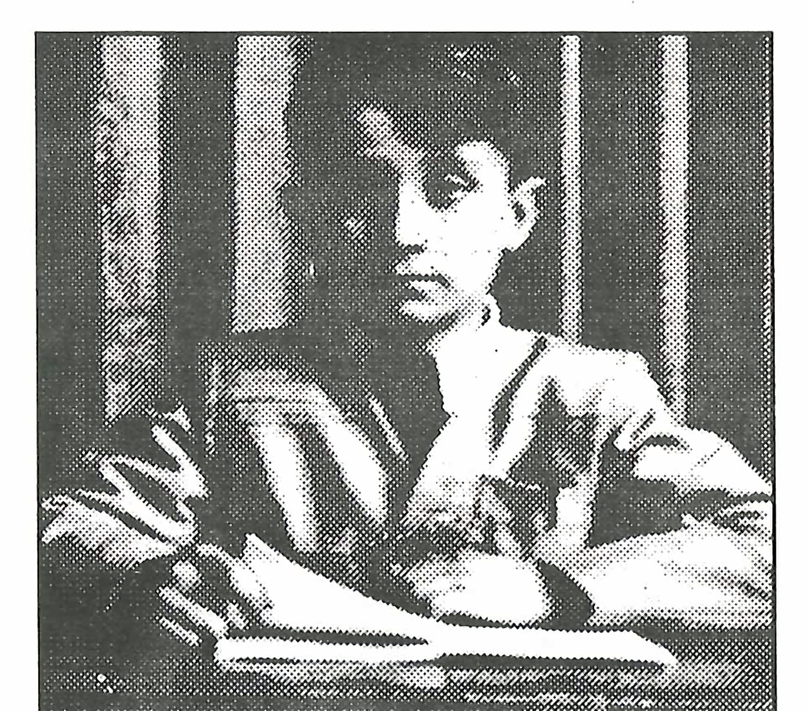
Shimon
Dov’s older brother, at school in Brussels after the war.
Part fourThe places
All of this happened in real towns. Most of them are in Ukraine today. The names changed when the borders changed.
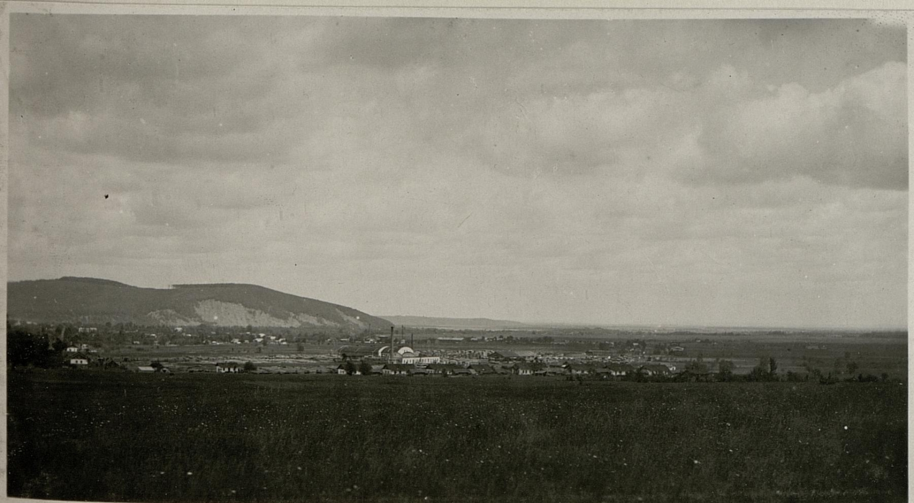
Nadwórna
Where David was born in 1911, and where his parents married four days earlier. Today it is Nadvirna, in Ukraine.
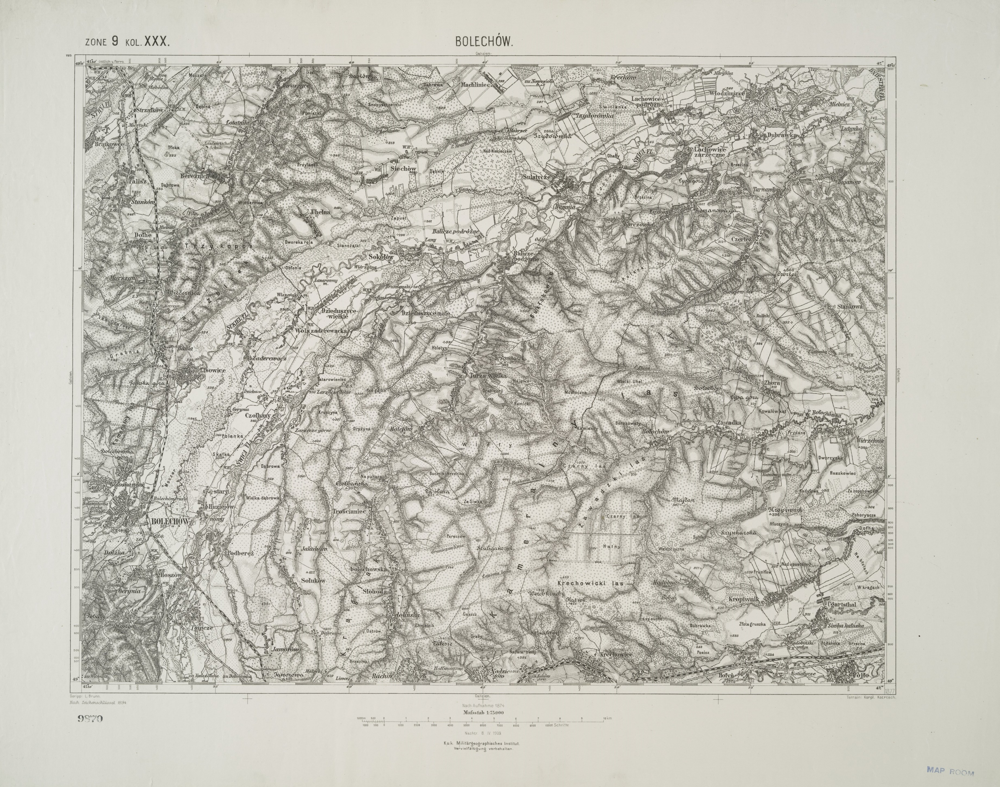
Bolechów
Where Lusia was born in 1913 and where she married David in 1935. Today it is Bolekhiv.
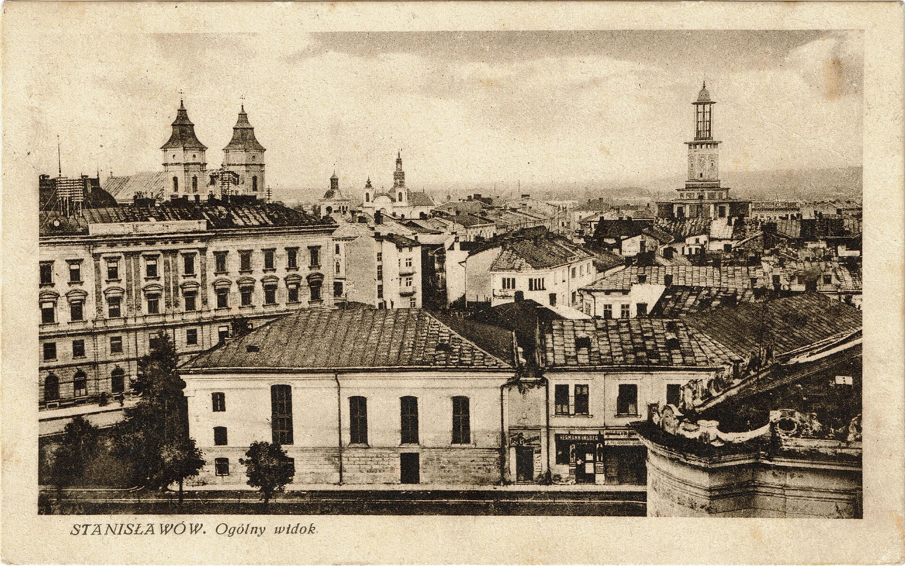
Stanisławów
The city the family moved to in 1918. David went to school here. Today it is Ivano-Frankivsk.
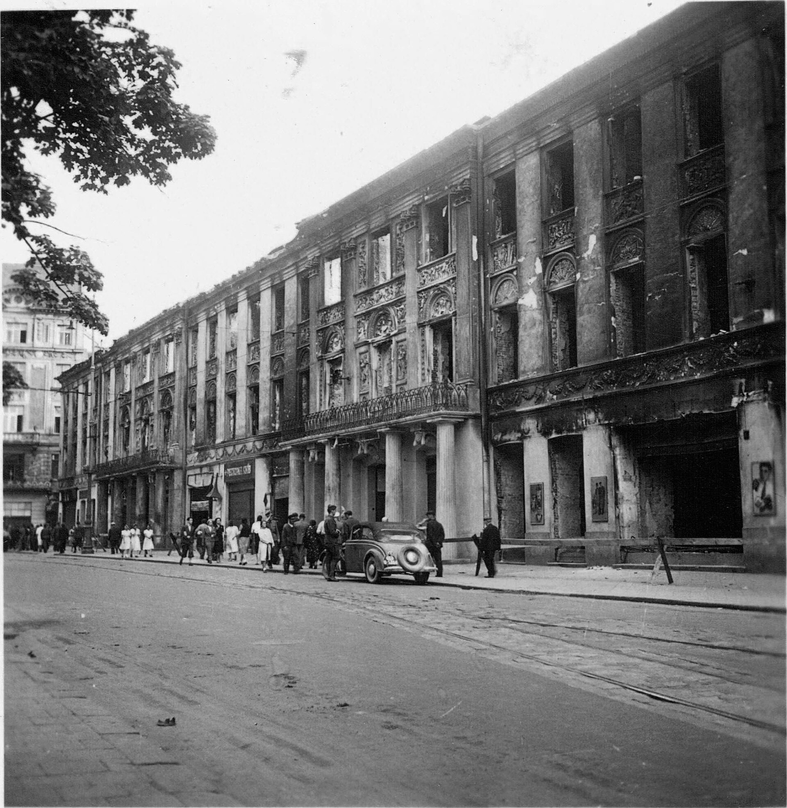
Lwów
Where Lusia survived the war under a false name, and where David reached her after escaping. Today it is Lviv.
Part fiveTwo hundred years, in order
- 1823Shabtai Rapaport is born in Tarnów. He becomes the rabbi of Dąbrowa Tarnowska.
- 1858His son Moses Saul Rapaport is born. He will be a merchant in Tarnów.
- 1866Three people named Griffel give money to a war fund in Nadwórna. It is the first time this family appears in a newspaper.
- 1884Rabbi Shabtai dies. We know when, because his name stops appearing in the birth register that spring.
- 1886Berish Rapaport is born in Radomyśl Wielki. He is Dov’s grandfather.
- 1888Rebeka Griffel is born in Nadwórna. She is Dov’s grandmother.
- 1904Moses Saul pays a notary two crowns so his wife Menycha can collect the post.
- 1911Berish and Rebeka marry on 21 December. Four days later their son David is born.
- 1912Berish is given the right to sign for a Griffel company.
- 1913Lusia Weitzner is born in Bolechów. She will become Dov’s mother.
- 1935David and Lusia marry in Bolechów on 10 February.
- 1937Their first son Shimon is born on 22 June.
- 1939The war begins. Everything below happens because of it.
- 1942Berish is taken from the prison in Tarnów to Auschwitz. He dies there on 29 March, two days after arriving. Rebeka is murdered the same year.
- 1942David escapes the Nadwórna ghetto hidden inside a railway wagon, among cut logs.
- 1942Lusia lives in Lwów under a false name, hiding four-year-old Shimon in a wooden crate against the wall.
- 1942David’s sister Lotte buys a forged American paper. The sellers report her to the Gestapo. She never comes back.
- 1945The war ends. On 26 December Lusia registers in Brussels as a displaced person.
- 1946Dov is born in Brussels on 28 August, at 250 rue des Coteaux.
- 1947David and Shimon sail for Palestine first. The boats will not take mothers with babies, and Dov is a few months old.
- 1948The family is together again, in Haifa.
- 2015Dov starts going back. Warsaw in April, then Przemyśl.
- 2018Dov visits Brussels, where he was born.
- 2019Dov visits Katowice. He has now been to four of the places.
- 2026This archive is finished for his eightieth birthday.
Part sixThe papers that prove it
An archive is only worth as much as the paper behind it. Here are some of the documents, and what each one tells us.
A birth, written down in 1911

The certificate with his face on it
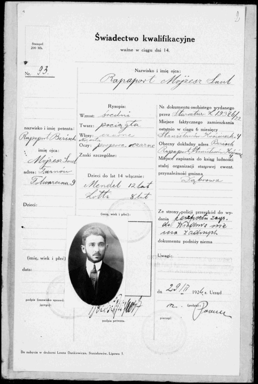
The record that says how he died
Berish was not taken from a ghetto. He was taken from the prison in Tarnów, on a transport of fifty-five men. He was given the number 27310. He arrived on 27 March 1942 and died two days later.
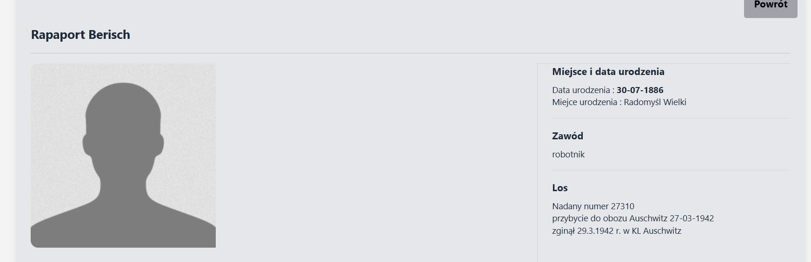
The page his son signed in 1953
For a long time this archive said that nobody had ever filled in a memorial page for Berish and Rebeka. That was wrong. David filled them in himself, in Haifa, on 26 April 1953. Both pages were in the archive the whole time. When we found the mistake we corrected it, and we left the correction on the website where everyone can see it.
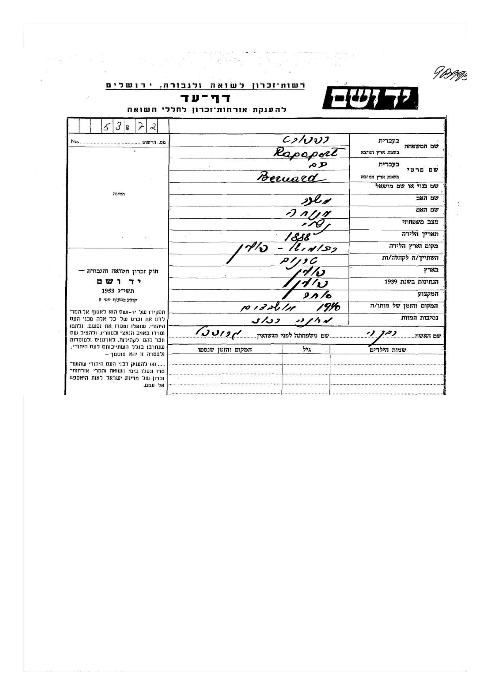
Her own handwriting, Brussels, 1945
A displaced person was somebody who had survived the war but had no home to go back to. Lusia registered as one in Brussels on 26 December 1945 and signed the card herself.
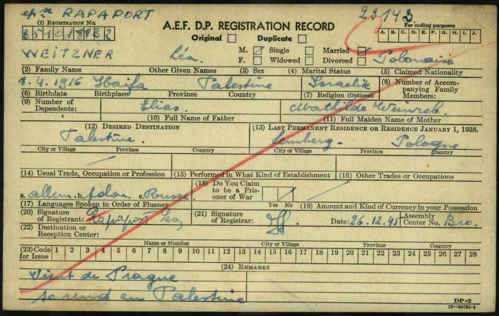
A list of names, and a man trying to save his family
This torn page sat in the archive for ten days labelled as somebody’s portrait. It is not a portrait. It is a list of fifteen families, with an address written at the bottom in pencil: care of Jakob Griffel, in Bucharest. He was a relative who worked on rescue during the war. Six of the fifteen names on the list are his own brothers and sisters.
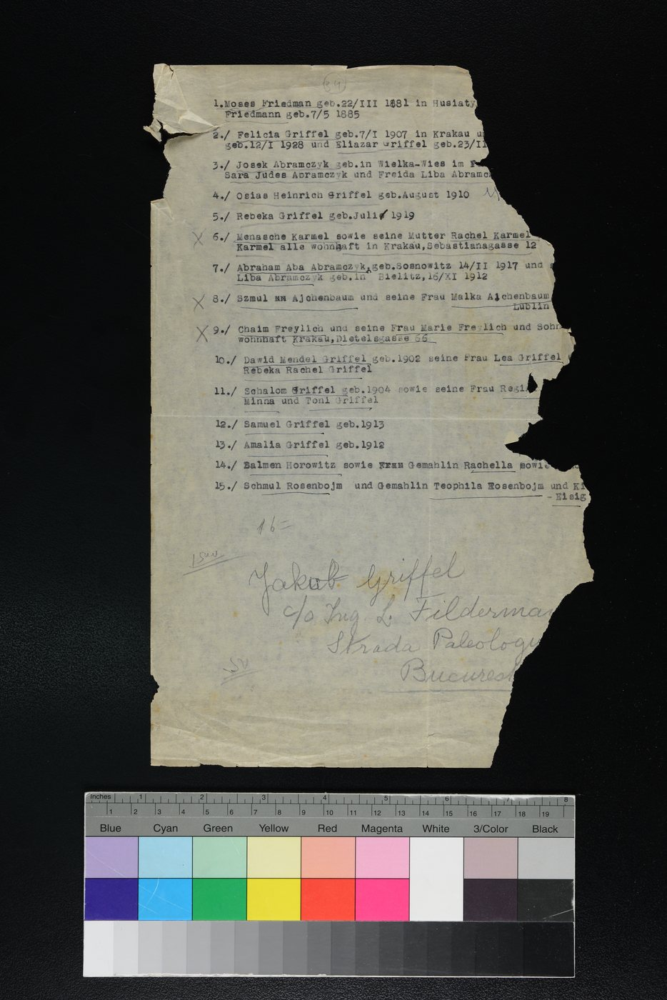
Part sevenThe journey out
David got out of the ghetto by hiding inside a railway wagon. A neighbour drilled holes into thick logs that were being loaded, and eighteen men hid among them. Somebody informed on them, so they jumped off the moving train. He reached Lwów on foot.
Lusia lived in Lwów under a borrowed name, Maria Cizlik. She ran an antiques shop. She kept Shimon, who was four, hidden inside a narrow wooden crate standing against the wall — the kind people used for storing potatoes.
Part eightDov went back
He could not take his mother. So he went himself, four times, and photographed it.
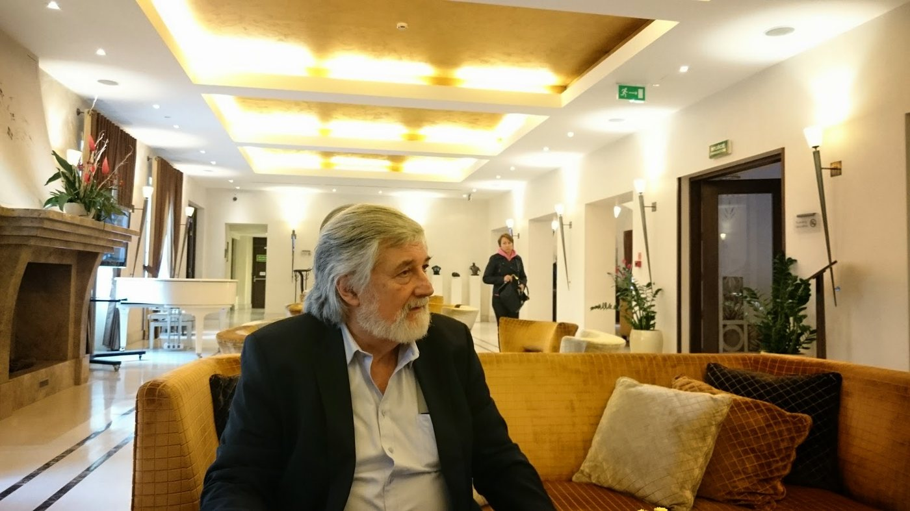
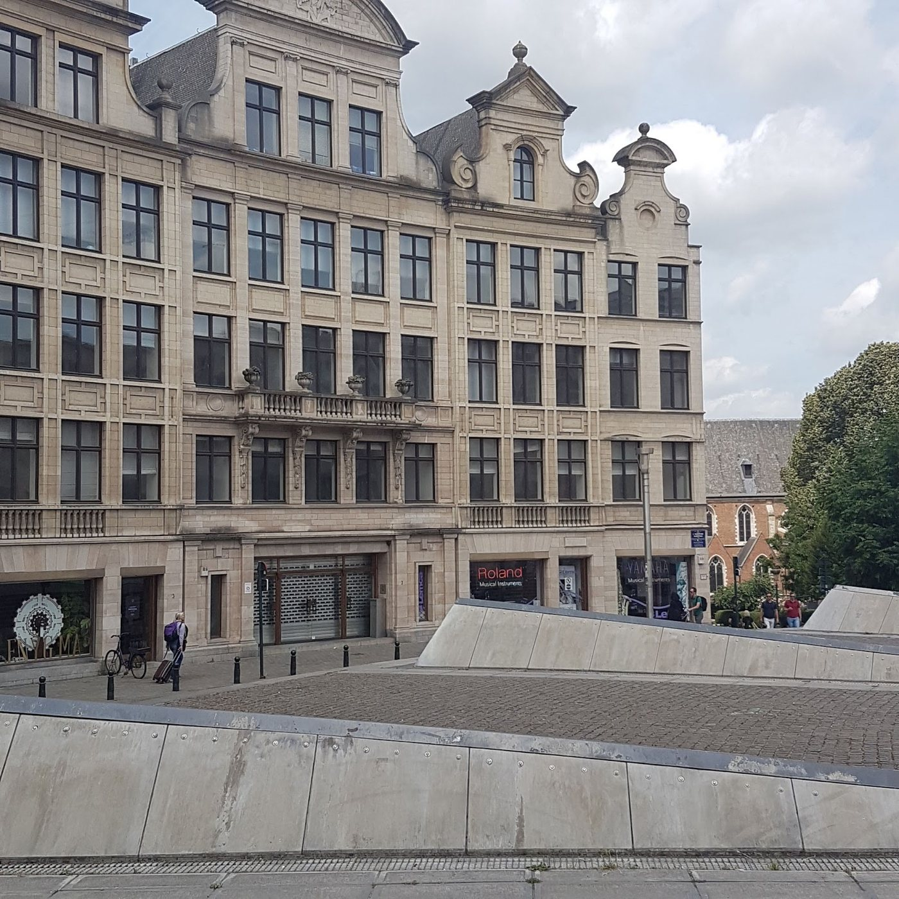
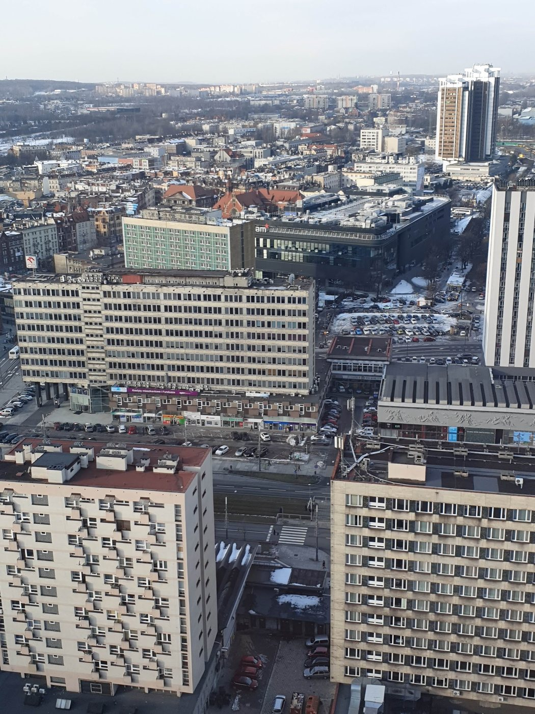
Brussels is where he was born. He stood in the city again seventy-two years later.
Part nineThe biggest things we found
Two generations further back
Berish’s passport application named his parents. The family line now reaches back to a rabbi born in 1823.
The day Berish died
Not just the year. 29 March 1942, confirmed by three separate archives — and the prison he was taken from.
A rabbi’s death date, with no death record
At a circumcision, one man holds the baby. The register writes his name down every time. Rabbi Shabtai’s name stops in April 1884, and his son stands in for him three weeks later. That is how we know when he died.
What happened to Lotte
The family knew she was killed but not how. The answer was in Lusia’s own memoir all along, on page 40. She bought a forged American paper. The sellers reported her.
Eighty years in the newspapers
One hundred and forty-two press notices about the family, from 1866 to 1946 — a shop, an oil refinery, a sawmill, a bankruptcy, a trial.
Berish’s name, twice, in print
In 1912 he is given the right to sign for a family company. In 1913 a drilling journal reports a new business called "Griffel jun. et Rappaport".
Lusia was in Brussels earlier than anyone thought
By December 1945 — three and a half months before David got there.
The questions we could not answer
They are written down too. An archive that hides what it does not know cannot be trusted about what it does.
LastOne rule
Nothing here was invented. Where two sources disagree, we show both. Where we do not know, we say we do not know — because the people who would have kept those records are the people who were killed, and pretending otherwise would be its own kind of forgetting.